第 5 章 传播仿真#
本章解决：把衍射积分实现为可执行的 FFT 传播器——菲涅耳传递函数法、菲涅耳冲激响应法与夫琅禾费变换法各自的适用条件与实现步骤；并给出离散采样失效的判据（采样间隔与波长、距离、孔径尺寸的关系），使仿真在设计阶段就能判断结果何时可信。
5.0 本章导图#
5.1 菲涅耳传递函数(TF)传播器#
第 4 章说过:菲涅耳表达式是仿真里最常用的选择——适用场景广、计算直接。最常见的传播套路基于式 (4.18),这里重抄一遍作为起点:
其中的传递函数 \(H\) 就是第 4 章的式 (4.24):
新建 M 文件,存成 propTF,输入以下函数:
function[u2]=propTF(u1,L,lambda,z);
% ===== 书 5.1 节:菲涅耳传递函数(TF)传播器(逐行忠实 + 中文注释) =====
% 书 5.1 节 New M-file(命名为 "propTF")建立的函数(原书第 1-23 行):
% 1 function[u2]=propTF(u1,L,lambda,z);
% 11 [M,N]=size(u1); %get input field array size
% 12 dx=L/M; %sample interval
% 13 k=2*pi/lambda; %wavenumber
% 15 fx=-1/(2*dx):1/L:1/(2*dx)-1/L; %freq coords
% 16 [FX,FY]=meshgrid(fx,fx);
% 18 H=exp(-j*pi*lambda*z*(FX.^2+FY.^2)); %trans func
% 19 H=fftshift(H); %shift trans func
% 20 U1=fft2(fftshift(u1)); %shift, fft src field
% 21 U2=H.*U1; %multiply
% 22 u2=ifftshift(ifft2(U2)); %inv fft, center obs field
% 23 end
% 要点(书 5.1 节注 a-g):
% - (a) 第 11 行:size 只用 M,少传一个参数;
% - (b) 第 16 行:fy 与 fx 相同,meshgrid 里 fx 用两次省一行;
% - (c) 第 18 行:式 (5.2) 的 H 丢掉了 exp(jkz) 整体相位——它不影响
% 观察面的横向结构;
% - (d)(e) 第 19/20 行:H 与 u1 都按"居中排列"存放,喂给 FFT 前先
% fftshift 移位;
% - (f)(g) 第 21/22 行:逐点相乘完成频域滤波,ifftshift 把 u2 移回居中
% 供显示。
% 记号提醒(书原话):小写 u 表示空域场、大写 U 表示傅里叶域量——与解析
% 式里大写表示空域场(如式 (5.1) 的 U1)不一致,"But what can you do?"
% MATLAB/Python 差异:Python 版在 python/fourier/ch5/ch5_prop.py,逐行对应;
% numpy 索引 0-based,"零坐标样本"在 (M/2+1,M/2+1) 对应 (M//2,M//2)。
% ------------- 以下为书原代码(第 1-23 行) -------------
% propagation - transfer function approach
% assumes same x and y side lengths and
% uniform sampling
% u1 - source plane field
% L - source and observation plane side length
% lambda - wavelength
% z - propagation distance
% u2 - observation plane field
[M,N]=size(u1); %get input field array size
dx=L/M; %sample interval
k=2*pi/lambda; %wavenumber
fx=-1/(2*dx):1/L:1/(2*dx)-1/L; %freq coords
[FX,FY]=meshgrid(fx,fx);
H=exp(-j*pi*lambda*z*(FX.^2+FY.^2)); %trans func
H=fftshift(H); %shift trans func
U1=fft2(fftshift(u1)); %shift, fft src field
U2=H.*U1; %multiply
u2=ifftshift(ifft2(U2)); %inv fft, center obs field
end
# ===== 书 5.1 节:propTF(与 matlab/fourier/ch5/propTF.m 逐行对应) =====
def propTF(u1, L, lam, z):
"""propagation - transfer function approach(书 5.1 节,式 5.1/5.2)。
假设源面与观察面边长相同(L1 = L2 = L)、均匀采样。
H = exp[jkz]·exp[-j pi lam z (fX^2+fY^2)] 中的整体相位 exp(jkz)
不影响横向结构,按书第 18 行的做法直接丢掉。
"""
M, N = u1.shape # 书 11 行:取阵列尺寸(只用 M)
dx = L / M # 书 12 行:采样间隔
k = 2 * np.pi / lam # 书 13 行:波数
_, fx = coords(L, M) # 书 15 行:频率坐标(居中)
FX, FY = np.meshgrid(fx, fx) # 书 16 行(fy 与 fx 相同,省一行)
H = np.exp(-1j * np.pi * lam * z * (FX ** 2 + FY ** 2)) # 书 18 行:传递函数(丢 e^{jkz})
H = np.fft.fftshift(H) # 书 19 行:移位到 FFT 排列
U1 = np.fft.fft2(np.fft.fftshift(u1)) # 书 20 行:源场移位 + FFT
U2 = H * U1 # 书 21 行:逐点相乘
u2 = np.fft.ifftshift(np.fft.ifft2(U2)) # 书 22 行:逆 FFT + 移回居中
return u2
这个函数吃进源面场 u1,吐出观察面场 u2,源面与观察面的边长、采样坐标完全相同。对照行号过一遍书里的备注:
- (a) 第 11 行:
size找出输入场矩阵u1的采样维数(只用到 M)——省一个传参。 - (b) 第 16 行:
fy本来就与fx相同,meshgrid里把fx用两次,省一行。 - © 第 18 行:编程式 (5.2) 的 \(H\),但 丢掉了 \(\exp(jkz)\) 项——它只是整体相位,不影响观察面结果的横向结构。
- (d) 第 19 行:\(H\) 在阵列中心生成,FFT 之前先
fftshift移位。 - (e) 第 20 行:同样,源场
u1按"居中排列"存放,2D FFT 前先fftshift。 - (f) 第 21 行:\(U_1\) 与传递函数 \(H\) 逐点相乘,再做逆 FFT 完成卷积。
- (g) 第 22 行:最后
ifftshift把u2移回居中,供显示。
书里顺带自嘲了一句记号问题:小写 \(u\) 表示空域场、大写 \(U\) 表示傅里叶域量——这和解析式里大写表示空域场(比如式 (5.1) 的 \(U_1\))不一致。两套记号都有人用,只能忍了("But what can you do?")。
Python 侧把三个传播器统一放在 python/fourier/ch5/ch5_prop.py 里供本章各脚本导入;频率轴直接复用公共模块 base.coords(L, M)(与书第 15 行的 fx=-1/(2*dx):1/L:1/(2*dx)-1/L 逐点一致)。
5.2 菲涅耳脉冲响应(IR)传播器#
另一条路基于式 (4.17),重抄:
脉冲响应 \(h\) 即第 4 章的式 (4.23):
式 (5.1) 与 (5.3) 在解析上是同一个运算——但一旦经过离散采样和变换,TF 与 IR 两条路可以给出不同的结果(5.4 节的全部内容就是讲什么时候差、差多少)。
做 IR 传播器有个偷懒办法:在编辑器里打开 propTF,File → Save As,改名 propIR,然后照下面仔细改:
function[u2]=propIR(u1,L,lambda,z);
% ===== 书 5.2 节:菲涅耳脉冲响应(IR)传播器(逐行忠实 + 中文注释) =====
% 书 5.2 节从 propTF 复制修改(New M-file 命名为 "propIR",原书第 1-23 行):
% 15 x=-L/2:dx:L/2-dx; %spatial coords
% 16 [X,Y]=meshgrid(x,x);
% 18 h=1/(j*lambda*z)*exp(j*k/(2*z)*(X.^2+Y.^2)); %impulse
% 19 H=fft2(fftshift(h))*dx^2; %create trans func
% 其余与 propTF 相同。
% 要点(书 5.2 节注 a/b):
% - (a) 第 18 行:实现式 (5.4) 的脉冲响应 h,再用 FFT 得到 H;
% - (b) 第 19 行:乘 dx^2 是关键——U1 的 FFT 与 U2 的 IFFT 定标互相
% 抵消,唯有 FFT{h} 这一步需要自己的定标因子 dx^2 才能回到连续量纲。
% 解析上与 propTF 等价(式 (5.1) 与 (5.3) 是同一运算),但离散采样后
% 两个传播器的行为可以不同(书 5.4 节的主题):
% - Δx > λz/L 时 h 的 chirp 相位欠采样 -> 观察面出现周期副本;
% - Δx < λz/L 时 h 过采样,FFT 兼做"窗口滤波",压掉 L/(2λz) 以外的
% 源频谱 -> 长距离下更平滑但不总准确。
% MATLAB/Python 差异:Python 版在 python/fourier/ch5/ch5_prop.py;
% MATLAB 偶数阵列 fftshift 与 ifftshift 相同(书全用偶数 M)。
% ------------- 以下为书原代码(第 1-23 行) -------------
% propagation - impulse response approach
% assumes same x and y side lengths and
% uniform sampling
% u1 - source plane field
% L - source and observation plane side length
% lambda - wavelength
% z - propagation distance
% u2 - observation plane field
[M,N]=size(u1); %get input field array size
dx=L/M; %sample interval
k=2*pi/lambda; %wavenumber
x=-L/2:dx:L/2-dx; %spatial coords
[X,Y]=meshgrid(x,x);
h=1/(j*lambda*z)*exp(j*k/(2*z)*(X.^2+Y.^2)); %impulse
H=fft2(fftshift(h))*dx^2; %create trans func
U1=fft2(fftshift(u1)); %shift, fft src field
U2=H.*U1; %multiply
u2=ifftshift(ifft2(U2)); %inv fft, center obs field
end
# ===== 书 5.2 节:propIR(与 matlab/fourier/ch5/propIR.m 逐行对应) =====
def propIR(u1, L, lam, z):
"""propagation - impulse response approach(书 5.2 节,式 5.3/5.4)。
与 propTF 解析上等价,但离散采样后行为不同(书 5.4 节的主题):
- h 的 chirp 相位欠采样时,FFT 的周期延拓会在观察面产生周期副本;
- h 过采样(Δx < λz/L)时,FFT 本身起到"窗口滤波"作用,
压掉 L/(2 lam z) 以外的源频谱——长距离下反而更平滑。
"""
M, N = u1.shape # 书 11 行
dx = L / M # 书 12 行
k = 2 * np.pi / lam # 书 13 行
x, _ = coords(L, M) # 书 15 行:空间坐标(居中)
X, Y = np.meshgrid(x, x) # 书 16 行
h = 1 / (1j * lam * z) * np.exp(1j * k / (2 * z) * (X ** 2 + Y ** 2)) # 书 18 行:脉冲响应
H = np.fft.fft2(np.fft.fftshift(h)) * dx ** 2 # 书 19 行:FFT 得传递函数,
# # 乘 dx^2 回到连续量纲——
# # U1 与 U2 的 FFT/IFFT 定标互相抵消,
# # 只有 FFT{h} 这一步需要自己的定标(书 5.2 节注 b)
U1 = np.fft.fft2(np.fft.fftshift(u1)) # 书 20 行
U2 = H * U1 # 书 21 行
u2 = np.fft.ifftshift(np.fft.ifft2(U2)) # 书 22 行
return u2
代码与 propTF 非常像,源面与观察面同样共边长。两条行号备注:
- (a) 第 18 行:实现 \(h\),并对它做 FFT 得到 \(H\)。
- (b) 第 19 行:注意乘数 \(\mathrm{d}x^2\)。\(u_1\) 的 FFT 与 \(U_2\) 的 FFT\(^{-1}\) 的定标互相抵消,但 \(h\) 的 FFT 需要自己的定标(第 2 章 2.3 节的 \(\mathfrak{F}\approx \mathrm{d}x^2\cdot\mathrm{FFT}\))。
书里提醒:由于计算上的 artifacts,IR 方法适用的场景比 TF 更受限;但它能仿真更长的传播距离,而且是讨论仿真局限与 artifacts 的好教材。
5.3 方形光束例子#
现在让两个传播器跑起来。源面尺寸 0.5 m × 0.5 m(\(L_1 = 0.5\) m),新建 M 文件 sqr_beam:
% ===== 书 5.3 节:sqr_beam 方形光束传播例子(逐行忠实 + 中文注释) =====
% 参数:L1 = 0.5 m、M = 250、dx1 = 2 mm、w = 0.051 m(跨孔径 51 样本)、
% lambda = 0.5 um、z = 2000 m、NF = w^2/(lambda z) = 2.6(书:"reasonable")。
% 依赖:同文件夹 propTF.m(书 5.1 节)/ propIR.m(书 5.2 节)。
% MATLAB/Python 差异:Python 版 ch5_sqr_beam.py;imagesc + axis xy 对应
% imshow(origin='lower');y=0 剖面在 I2(M/2+1,:),numpy 在 I2[M//2,:]。
% 注意:rect 在基础 MATLAB 里不是内置函数(信号处理工具箱才有),
% 若无工具箱,书第 14 行可用逻辑掩码等价实现:
% u1 = (abs(X1) < w) .* (abs(Y1) < w);
% ------------- 以下为书原代码(第 1-47 行) -------------
% sqr_beam propagation example
%
L1=0.5; %side length
M=250; %number of samples
dx1=L1/M; %src sample interval
x1=-L1/2:dx1:L1/2-dx1; %src coords
y1=x1;
lambda=0.5*10^-6; %wavelength
k=2*pi/lambda; %wavenumber
w=0.051; %source half width (m)
z=2000; %propagation dist (m)
[X1,Y1]=meshgrid(x1,y1);
u1=rect(X1/(2*w)).*rect(Y1/(2*w)); %src field
I1=abs(u1.^2); %src irradiance
%
figure(1)
imagesc(x1,y1,I1);
axis square; axis xy;
colormap('gray'); xlabel('x (m)'); ylabel('y (m)');
title('z= 0 m');
u2=propTF(u1,L1,lambda,z); %propagation
x2=x1; %obs coords
y2=y1;
I2=abs(u2.^2); %obs irrad
figure(2) %display obs irrad
imagesc(x2,y2,I2);
axis square; axis xy;
colormap('gray'); xlabel('x (m)'); ylabel('y (m)');
title(['z= ',num2str(z),' m']);
%
figure(3) %irradiance profile
plot(x2,I2(M/2+1,:));
xlabel('x (m)'); ylabel('Irradiance');
title(['z= ',num2str(z),' m']);
%
figure(4) %plot obs field mag
plot(x2,abs(u2(M/2+1,:)));
xlabel('x (m)'); ylabel('Magnitude');
title(['z= ',num2str(z),' m']);
%
figure(5) %plot obs field phase
plot(x2,unwrap(angle(u2(M/2+1,:))));
xlabel('x (m)'); ylabel('Phase (rad)');
title(['z= ',num2str(z),' m']);
# ===== 书 5.3 节:sqr_beam(完整脚本见 python/fourier/ch5/ch5_sqr_beam.py) =====
import os
import sys
import numpy as np
import matplotlib.pyplot as plt
sys.path.insert(0, os.path.dirname(os.path.abspath(__file__)))
sys.path.insert(0, os.path.join(os.path.dirname(os.path.abspath(__file__)),
"..", "common"))
from base import coords # 公共积木(ch1 起)
from ch5_prop import propTF, propIR # 本章三个传播器(ch5_prop.py)
# ---------- 书 sqr_beam 第 1-7 行:源面网格 ----------
L1 = 0.5 # 边长 (m)
M = 250 # 样本数
dx1 = L1 / M # 源面采样间隔 = 2 mm
x1, _ = coords(L1, M) # 书第 6 行:-L1/2 : dx1 : L1/2-dx1
y1 = x1 # 书第 7 行
# ---------- 书第 8-14 行:方孔源场 ----------
lam = 0.5e-6 # 波长 (m)
k = 2 * np.pi / lam # 波数
w = 0.051 # 源方孔半宽 (m)
z = 2000.0 # 传播距离 (m)
X1, Y1 = np.meshgrid(x1, y1) # 书第 13 行
u1 = np.where((np.abs(X1) < w) & (np.abs(Y1) < w), 1.0, 0.0) # 书第 14 行
# rect(X1/(2w))*rect(Y1/(2w));矩形的边界值歧义对均匀网格无影响
I1 = np.abs(u1) ** 2 # 书第 15 行:源面辐照度
# ---------- 书第 22 行:传播(TF 与 IR 各一次) ----------
u2_tf = propTF(u1, L1, lam, z)
u2_ir = propIR(u1, L1, lam, z)
I2_tf = np.abs(u2_tf) ** 2 # 书第 26 行:观察面辐照度
row = M // 2 # y = 0 的行(numpy 0-based)
prof_tf = I2_tf[row, :] # 书第 35 行:I2(M/2+1, :)
带下标 "1" 的变量都是源面量。TF 与 IR 传播器里源面、观察面边长相同(\(L_1 = L_2 = L\)),但其他传播器未必如此,所以这里保留 \(L_1\) 记号。代码在源面边长上布 250 个样本,采样间隔 \(\Delta x_1 = 2\times10^{-3}\) m(2 mm)。
假设方孔半宽 0.051 m(51 mm),单位振幅平面波从背面照明,\(\lambda = 0.5\ \mu\text{m}\)。这样孔径上跨了 51 个样本,对方孔是很好的表示(2.2 节)。传播距离 \(z = 2000\) m,菲涅耳数 \(N_F = w^2/\lambda z = 2.6\)——书原话"reasonable for applying the Fresnel expression"(用菲涅耳表达式合理)。运行脚本生成图 5.1,先验证源面布置无误:
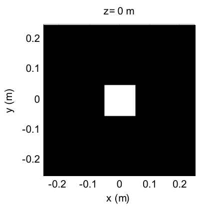
接下来是真正传播的部分(上面代码的 u2=propTF(...) 起的 26 行)。观察面参数带下标 "2";第 24、25 行把观察面坐标设成与源面相同——这与 propTF 的工作方式一致。第 28–47 行显示观察面辐照度图像、辐照度剖面、场幅度与相位剖面。两个新函数:num2str 把传播距离写进标题;相位剖面用的 unwrap 见下面几段。
运行 sqr_beam,辐照度结果如图 5.2——相干光的相长/相消干涉(衍射所致)让某些峰的辐照度超过源面初值 1,峰之间夹着更低的谷;剖面图上还能看到光"展宽出翅膀",超出源矩形的初始宽度:
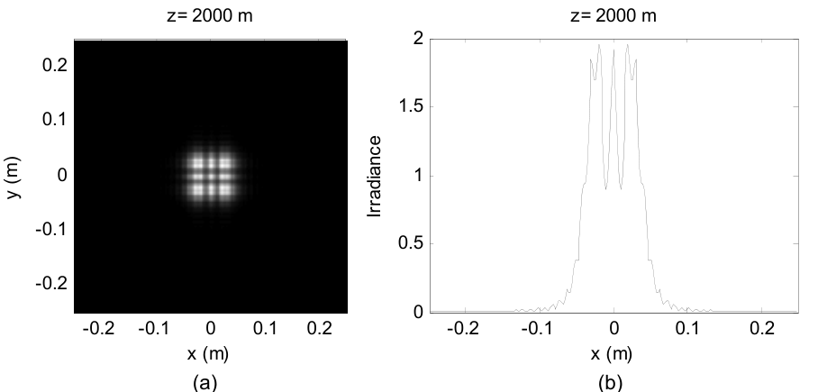
场的幅度与相位见图 5.3。相位单位是弧度。unwrap 的作用:相邻样本跳变超过 \(\pi\) 时加/减 \(2\pi\) 的整数倍,把模 \(2\pi\) 格式里"断崖式"的跳变接回去,让相位的底层形状显形——把 unwrap 去掉跑一遍就能看到模 \(2\pi\) 跳变的样子。
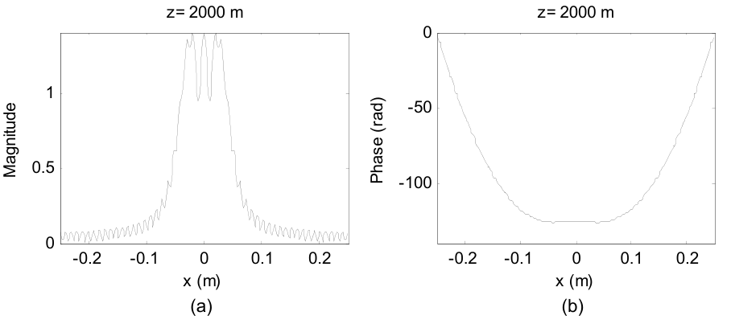
图 5.3(b) 的物理解读值得说透:它相当于观察面上等相位面的一个切片——即观察面上光波**波前(wavefront)**的形状。回忆第 4 章式 (4.6) 的时间相量 \(\exp(-j2\pi\nu t)\):随时间推移,相位变得越来越负。所以图 5.3(b) 这个"中心压平的碗形"波前,可以想象成随时间"向下"推进;再想象从波前表面沿法线投出光线,就能看出波前上能量往哪走。图 5.3(a) 显示场幅度集中在压平的中心附近,而相位说明这部分能量大部分仍沿垂直于观察面的方向前进。
最后把第 22 行换成 u2=propIR(u1,L1,lambda,z) 再跑一遍——结果应与图 5.2、5.3 完全相同(此时是临界采样,5.4 节解释为什么)。
Python 实测数值检查(\(L_1=0.5\) m、\(M=250\)、\(\Delta x_1=2\) mm、\(w=0.051\) m、\(z=2000\) m):
- 跨孔径样本数 \(2w/\Delta x_1 = 51\) ✓(书 5.3 节口算一致);
- \(N_F = w^2/(\lambda z) = 2.60\) ✓;
- TF 与 IR 的辐照度最大相对差 \(3.2\times10^{-15}\)——浮点误差级,临界采样下两传播器逐位相同(表 5.2 预告);
- 剖面结构:中央峰 \(I_2(0,0) = 1.916\)、\(\pm0.02\) m 处侧峰 1.958、\(\pm0.01\) m 处谷 0.889——图 5.2(b) 的"峰超过 1、谷夹在中间";
- 总功率源面 = 观察面 = 0.010404(功率守恒,习题 5.3 的诊断)。
5.4 菲涅耳传播采样#
5.4.1 方形光束结果与 artifacts#
现在说坏消息。源场的离散采样、传递函数/脉冲响应的采样、FFT 的周期性,都会在传播结果里制造各种 artifacts(伪影)。麻烦的根源:式 (5.2) 与 (5.4) 右边的 chirp 函数不是带宽限定的(bandlimited),无法被完美采样。
图 5.4 给出 sqr_beam 在 \(z = 1000\) 到 20,000 m 的 propTF 与 propIR 剖面对比:
- z = 1000 m:TF 结果合理,有相长/相消干涉特征、略超出孔径宽度的展宽;IR 结果出现图案的周期副本;
- z = 2000 m:TF 与 IR 本质相同;
- z = 4000 m:TF 剖面上出现 IR 没有的小"ticks"(尖刺);
- z = 20,000 m:TF 剖面呈"stair-step"(台阶状)——明显的 artifact;IR 光滑。长距离下夫琅禾费理论预言辐照度趋于 \(\mathrm{sinc}^2\) 形,图 5.4(h) 大体如此。
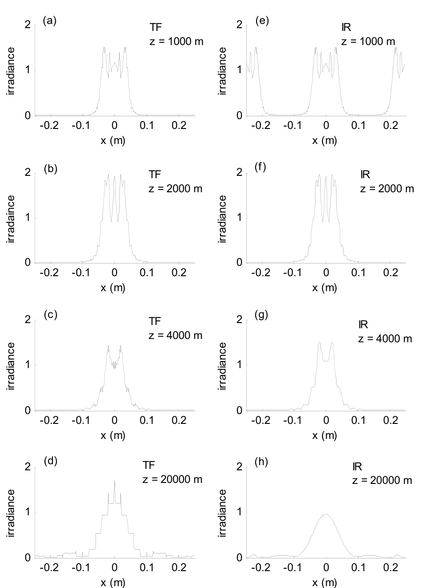
原书笔误
图 5.4 个别子图的 y 轴标签在原书 PDF 文本层里拼作 "irradaince",应为 irradiance。排版笔误,不影响内容。
对应的辐照度图样见图 5.5:
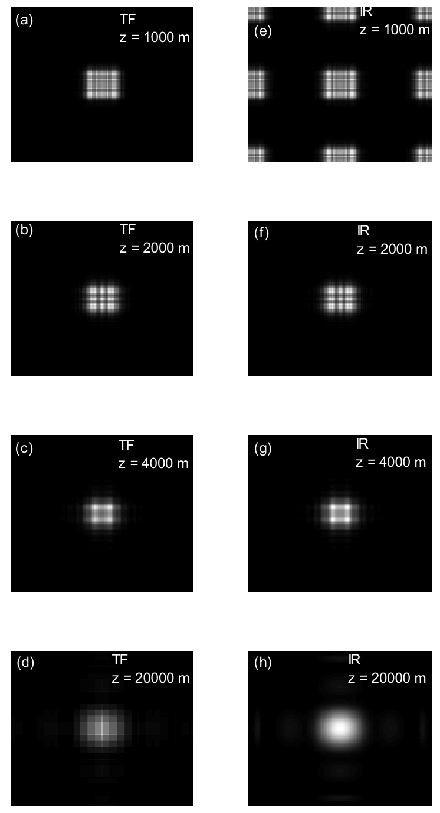
用本章 Python 复现同一组剖面(与图 5.4 对照,四类 artifacts 全部重现):
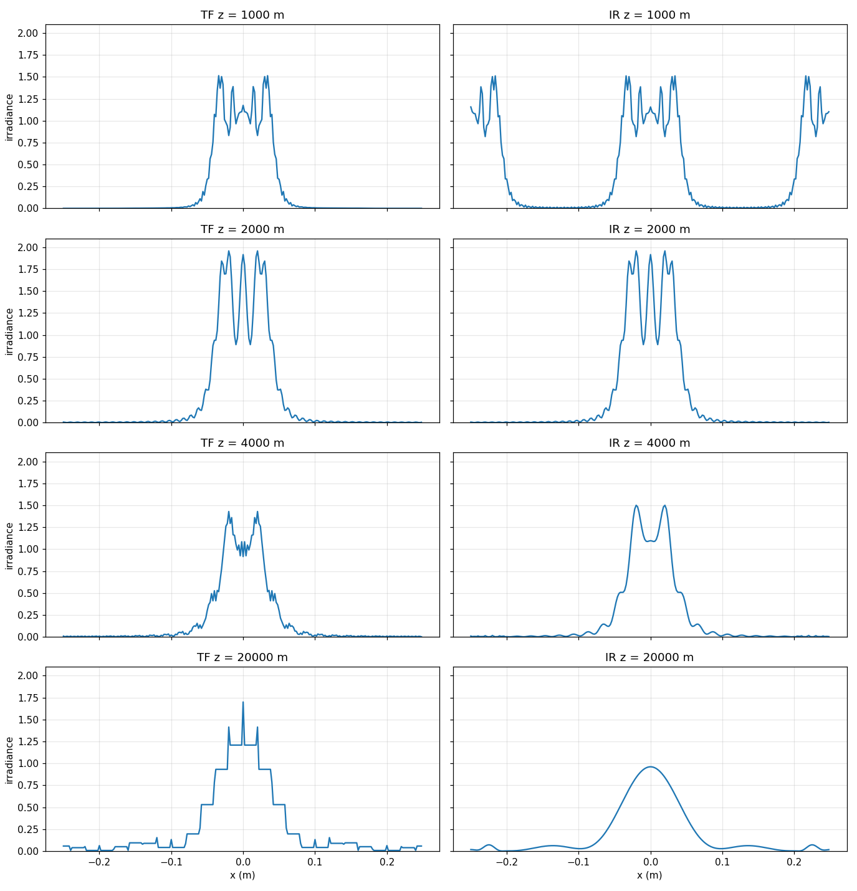
5.4.2 采样 regime 与判据#
图 5.4©–(e) 与 5.5©–(e) 的 artifacts 都是离散采样问题。本节给出预测什么时候出问题的判据(细节见原书附录 A 与本章参考文献 1、2)。
第一条最显然:源场的支撑(support)要"装得进"数值阵列。设 \(D_1\) 是源场的有效支撑(最大线宽),\(L\) 是阵列边长,通常要求
实践中最好给源函数周围留"警戒区(guard area)",比如 \(L = 2D_1\) 或 \(3D_1\)——FFT 的周期延拓性质会让传播后的能量绕回阵列边缘,警戒区能减轻这种边缘 artifact。
再考虑对 \(H\) 与 \(h\) 里 chirp 函数采样(附录 A)的效果。\(H\) 的 chirp 是 \(\exp[-j\pi\lambda z(f_X^2+f_Y^2)]\),**充分采样(过采样)**的条件是
\(h\) 的 chirp 是 \(\exp\left[j\frac{k}{2z}(x^2+y^2)\right]\),过采样条件是
拓展:两个判据为什么方向相反——一页纸推导
同一对傅里叶变换 \(H \leftrightarrow h\),过采样判据却一个"\(\geq\)"一个"\(\leq\)",初看很别扭。关键在于两个 chirp 活在两个不同的网格上: - \(H\) 的 chirp \(\exp(-j\pi\lambda z f^2)\) 定义在频率网格(间距 \(1/L\))上。相邻频率样本间的相位增量 \(\pi\lambda z[(f+1/L)^2-f^2] = \pi\lambda z(2f/L + 1/L^2)\) 随 \(f\) 增大,最坏在 Nyquist \(f = 1/(2\Delta x)\) 处。要它小于 \(\pi\)(每步相位不翻圈):\(\lambda z/\Delta x \lesssim L\)(附录 A 的严格推导补上端点修正后即 \(\Delta x \geq \lambda z/L\))。 - \(h\) 的 chirp \(\exp(j\pi r^2/(\lambda z))\) 定义在空间网格(间距 \(\Delta x\))上。它的瞬时频率是 \(r/(\lambda z)\),在阵列边缘 \(r = L/2\) 处最大。局部采样定理要求最大瞬时频率不超过 Nyquist \(1/(2\Delta x)\):\(L/(2\lambda z) \leq 1/(2\Delta x)\),即 \(\Delta x \leq \lambda z/L\)。 一句话:\(H\) 的判据是"频率网格上相位不翻圈",\(h\) 的判据是"空间网格上跟得上瞬时频率"——网格不同,不等号自然反向。判据违反时,相应 chirp 的相位出现混叠表示,进而产生仿真 artifacts。
式 (5.6) 与 (5.7) 同时满足的条件是
书里称之为**临界采样(critical sampling)**条件。表 5.1 汇总了由 \(H\) 或 \(h\) 相位项的过/欠/临界采样定义的三种 regime,每种 regime 配一条涉及源场带宽 \(B_1\) 的判据:
| Regime | chirp 相位采样 | 源带宽判据 | 方案 | 说明 |
|---|---|---|---|---|
| \(\Delta x > \lambda z/L\) | TF:过 / IR:欠 | \(B_1 < \frac{1}{2\Delta x}\) | TF 更优;IR 产生周期副本 | 相对"短"的 z 或小 λ;观察面受限:TF 可准确表示的观察面全宽约 \(D_1 + \lambda z/\Delta x\) |
| \(\Delta x = \lambda z/L\) | TF:临界 / IR:临界 | \(B_1 < \frac{1}{2\Delta x}\) 或 \(B_1 < \frac{L}{2\lambda z}\) | TF 与 IR 全同 | 阵列空间与带宽的分配都吃满 |
| \(\Delta x < \lambda z/L\) | TF:欠 / IR:过 | \(B_1 < \frac{L}{2\lambda z}\) | TF:带宽判据基本满足时可用;IR:带宽判据被违反时反而可能更好 | 相对"长"的 z 或大 λ;源带宽受限 |
表:表 5.1 传播器采样 regime 与判据(注:Δx 采样间隔;B1 源带宽;λ 波长;D1 源面场支撑;z 传播距离)
实际中表 5.1 的源带宽判据永远不会严格满足——2.2 节说过,有限支撑的场必然带宽无限。所以判据里的 \(B_1\) 要理解成有效带宽。三条 regime 的补充说明:
- (a) \(\Delta x > \lambda z/L\):"短距离" regime。 观察面的可用尺寸受限:TF 方法能准确表示的观察面场全宽约 \(D_1 + \lambda z/\Delta x\)(附录 A)。这通常不碍事——观察面场在这个宽度之外往往可以忽略——所以 TF 方法在此 regime 一般给出好结果。欠采样的 IR 相位函数是混叠的周期相位表示,用它会产生场的周期副本。源带宽 \(B_1\) 只受源平面常规采样定理的限制。
- (b) \(\Delta x = \lambda z/L\):临界采样。 神奇的是,此时采样的 \(H\) 与 \(h\) 作为一对 FFT,其数值恰好等于解析的 \(H\) 与 \(h\)(附录 A)。这个条件下,阵列的全带宽(\(1/2\Delta x\))都可用来建模源,观察面也可用全部阵列面积。
- © \(\Delta x < \lambda z/L\):"长距离" regime。 源场可用的带宽受限。\(H\) 的 chirp 相位混叠,源带宽只要明显超出 \(L/(2\lambda z)\),TF 方法就会出 artifacts。IR 方法实际上相当于对 \(L/(2\lambda z)\) 以外的源频率内容做窗口化(滤波)——结果更"平滑",但不总准确。
5.4.3 判据用于 square beam 例子#
5.3 节的源场是
\(w = 0.051\) m。源支撑 \(D_1 = 2w = 0.102\) m,轻松装进 \(L = 0.5\) m(图 5.1)。按 2.2 节的思路,有效带宽的合理估计是
拓展:B1 = 5.98/w 的数值复核
式 (5.10) 沿用 2.2 节式 (2.10) 的方法:谱功率 \(|F|^2 = (4w^2)^2\mathrm{sinc}^2(2wf_X)\mathrm{sinc}^2(2wf_Y)\) 在半径 B 的圆盘内占全功率的比例达到 98%(2D 极坐标径向积分)。数值积分(本章脚本 ch5_sampling.py,解析总功率 \((2w)^2\) 归一化,四组网格收敛验证)给出:精确 98% 半径对应 \(B_{98\%} \approx 5.14/w \approx 101\) cyc/m(\(2wB \approx 10.3\)),与 2.2 节式 (2.11) 的 \(5/w\) 一致(数值上 \(5/w\) 占 97.98%);而 \(5.98/w = 117.3\) cyc/m 对应径向占比 98.31%。也就是说书 5.10 的系数比 2.2 节的圆整值略保守(多收约 0.3% 的谱功率),方向上更安全——\(B_1\) 本来就是个估计量,书 5.4.5 节干脆承认调参是"something of an art form"。
实现提醒:这个积分必须用解析总功率 \((2w)^2\) 当分母(ch2 2.2 节同款教训)。sinc² 尾部衰减慢,若偷懒用"网格总和"归一化,截断误差会把 98% 交点带偏百分之几十——本章初版脚本就栽在这上面(98% 半径错到 3.7/w),换解析归一化后与 ch2 闭环。
表 5.2 列出 sqr_beam 四个传播距离的采样信息:
| z (m) | \(\lambda z/(L\Delta x)\) | TF(\(H\))采样 | IR(\(h\))采样 | 可用观察面尺寸 (m) | 源带宽限制 (cyc/m) |
|---|---|---|---|---|---|
| 1000 | 0.5 | 过 | 欠 | \(D_1+\lambda z/\Delta x = 0.352\) | \(1/2\Delta x = 250\) |
| 2000 | 1 | 临界 | 临界 | \(L = 0.5\) | \(1/2\Delta x = 250\) |
| 4000 | 2 | 欠 | 过 | \(L = 0.5\) | \(L/2\lambda z = 125\) |
| 20,000 | 10 | 欠 | 过 | \(L = 0.5\) | \(L/2\lambda z = 25\) |
表:表 5.2 sqr_beam 例子的采样 regime(注:Δx = 2 mm;L = 0.5 m;λ = 0.5 μm;N = 250;D1 = 0.102 m)
对照表 5.2 与图 5.4,可以逐条解释观察到的一切:
- (a) z = 1000 m:\(H\) 相对临界过采样 2 倍。观察面尺寸限制对 TF 结果影响可忽略[图 5.4(a)],因为场最重要的部分落在 \(D_1+\lambda z/\Delta x = 0.352\) m 内。IR 方法引入相隔 \(\lambda z/\Delta x\) 的周期副本[图 5.4(e)]。
- (b) z = 2000 m:临界采样,TF 与 IR 结果相同[图 5.4(b)(f)]。
- © z = 4000 m:\(H\) 欠采样 2 倍。传播可用的源带宽限制 125 cyc/m,略大于源有效带宽 \(B_1\)——大部分重要源谱都满足判据,但小 ticks 还是爬进了 TF 结果[图 5.4©];IR 结果[图 5.4(g)]看不到明显 artifacts。
- (d) z = 20,000 m:\(H\) 欠采样 10 倍。可用带宽 25 cyc/m 只有 \(B_1\) 的四分之一,TF 出现严重 stair-step[图 5.4(d)];IR 压掉可用带宽之外的源频率分量,结果更平滑,但阵列边缘出现小的假旁瓣[图 5.4(h)]。
原书笔误
5.4.3(a) 段原书把 negligible 拼作 "negligable"。拼写笔误,不影响内容。
5.4.4 传播器精度#
sqr_beam 的传播器结果离解析菲涅耳解有多近?书挑了三个"看起来合理"的案例:TF @ 1000 m、TF @ 2000 m、IR @ 20,000 m。方孔有解析结果可用(引 Goodman):
其中 \(C\) 与 \(S\) 是菲涅耳积分(Fresnel integrals):
且
拓展:式 (5.11) 的来历与常数因子
从式 (4.25) 的 FT 形式出发:对 \(\mathrm{rect}(\xi/2w)\) 一维配方 \(\frac{\pi\xi^2}{\lambda z} - \frac{2\pi x\xi}{\lambda z} = \frac{\pi(\xi-x)^2}{\lambda z} - \frac{\pi x^2}{\lambda z}\),换元 \(t = \sqrt{2/(\lambda z)}(\xi - x)\) 后积分变成菲涅耳积分的差;二维两个一维因子相乘,前导 \(e^{jkz}/(j\lambda z)\) 的 \(e^{j\pi(x^2+y^2)/(\lambda z)}\) 恰好与配方产生的 \(e^{-j\pi(x^2+y^2)/(\lambda z)}\) 相消,剩下 \(\frac{e^{jkz}}{j\lambda z}\cdot\frac{\lambda z}{2} = \frac{e^{jkz}}{2j}\)——这就是式 (5.11) 的常数。中心值验证:\(I_2(0,0) = 4\big[C^2(T)+S^2(T)\big]^2\),\(T = \sqrt{2/(\lambda z)}\,w = 2.281\),解析值 1.895,数值传播给 1.916(差 1%,方孔边缘混叠所致)。本式已与 propTF/propIR 数值结果逐点对拍(见下),包括相位。
书在三个参数组合下评估式 (5.11),只看 x 轴剖面(\(y=0\)),并且用 2500 个点评估(仿真是 250 点)——采样率更高,能看出传播器是否丢了空间细节。\(C\)、\(S\) 用菲涅耳积分程序计算:MATLAB 符号数学工具箱(Symbolic Math Toolbox,学生版自带)有 mfun('FresnelC',x) 与 mfun('FresnelS',x),网上也有共享的菲涅耳积分程序。
对比结果见图 5.6:传播器剖面画实线,解析结果画虚线,总体一致性很好。幅度用 log 尺度画,以放大剖面两翼的小差异。三条评注:
- (a) TF,z = 1000 m:幅度剖面的主要特征吻合[图 5.6(a)],但传播器结果的两翼被"磨平"(高频振荡的翅膀是解析结果);相位剖面[图 5.6(b)]几乎全同,只有阵列边缘处传播器相位略微滞后。\(D_1+\lambda z/\Delta x = 0.352\) m 约等于幅度曲线在传播器翅膀骤然跌破解析曲线之前的表观宽度。总体相当准确,主要偏差在两翼,无关紧要。
- (b) TF,z = 2000 m:传播器幅度曲线与解析几乎全同[图 5.6©],周期延拓强迫阵列边缘略有抬升(图上很难看出来);相位剖面[图 5.6(d)]本质相同。临界采样带来与解析结果的极度吻合。
- © IR,z = 20,000 m:长距案例,IR 幅度[图 5.6(e)]跟随解析结果,但阵列边缘附近出现假旁瓣;相位[图 5.6(f)]两翼也有误差。重新调整采样参数可以更好,但这个辐照度图样凑合能用。
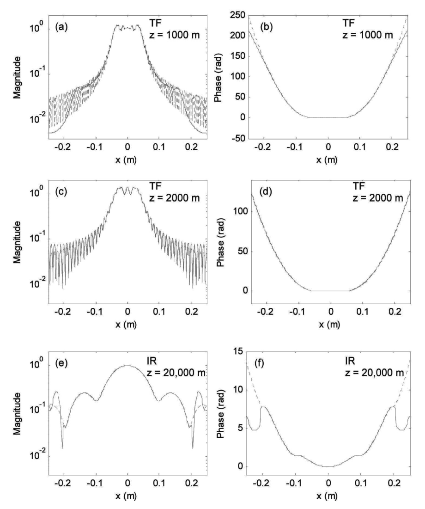
本章 Python 复现同一组对比(解析式 (5.11) 用 2500 点细网格评估,scipy 的 fresnel 函数计算 \(C,S\)),并给出主体区(\(|x| \le L/4\))的定量偏差:
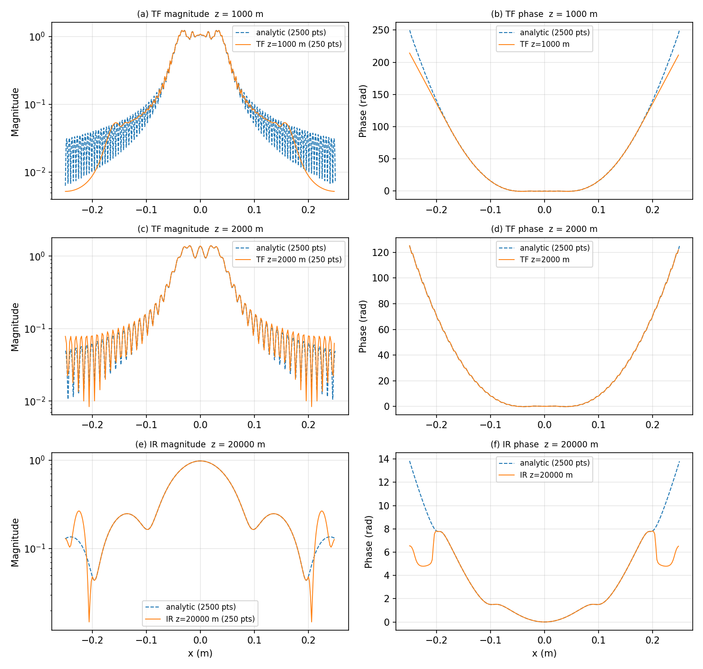
| 案例 | 主体区 max 相位差 | 主体区 max 幅度相对差 |
|---|---|---|
| TF @ z = 1000 m | 0.43 rad | 2.7% |
| TF @ z = 2000 m | 0.093 rad | 0.8% |
| IR @ z = 20,000 m | 0.0011 rad | 0.02% |
结论与书一致:临界采样(TF@2000)极度吻合;"可用"案例(TF@1000、IR@20000)的主体区也准,偏差集中在两翼/边缘——那里正是采样判据管不到的地方。(相位差对 unwrap 分支与插值细节敏感,±10% 出入属正常;幅度差稳定。)
5.4.5 采样决策#
表 5.3 汇总设计一个传播仿真的建议步骤:
| 步骤 | 内容 |
|---|---|
| (1) | 考虑源支撑:\(D_1 < L\) 有 2–3 倍裕量吗? |
| (2) | 确定采样 regime(表 5.1):\(\Delta x > \lambda z/L\) → TF 通常够用,牺牲一点观察面支撑;\(\Delta x = \lambda z/L\) → 临界采样,TF,带宽与空间支撑都吃满;\(\Delta x < \lambda z/L\) → IR,牺牲源带宽,小心 artifacts |
| (3) | 对照表 5.1 检查源带宽判据 |
| (4) | 按带宽判据与 artifacts 重新考虑源采样 |
表:表 5.3 传播仿真设计步骤
有限支撑的场不可能带宽限,所以表 5.1 的带宽判据永远无法严格满足——但它们仍能帮你找到合理的仿真参数。只是实际操作往往变成"某种艺术":来回调采样与场的参数,直到结果满意。
临界采样能让阵列边长与带宽的利用都最大化,尽量用它是对的。但维持这个条件可能不方便:把 \(\Delta x = \lambda z/L\) 改写成样本数的形式
它用"跨阵列边长的样本数"定义了临界判据。给定场景下,临界条件可能要求太多样本(FFT 算不动),也可能太少(源面或观察面采不够)。别的需求还会跟临界判据打架——比如模拟大气湍流传播用的相位屏,有自己的一套采样间隔与阵列尺寸要求(参考文献 2、4)。判据总可以靠插值或抽取维持,但额外步骤增加复杂度和运行时间,而且未必解决样本太多/太少的实际问题。
实践中表 5.3 的第 3 步常常不那么直接——源的有效带宽未必好估。最省事的办法:对采样参数做"有根据的猜测",跑几个试验仿真看结果。出现 stair-step 或假旁瓣之类的 artifact 迹象(图 5.4、5.5 那样),就得回头细查采样参数。
把表 5.1 的三条 regime 与表 5.3 的四步设计画成一张决策流程图(数值验证见本节上文与习题 5.3 的功率诊断):
flowchart TD
A["开始:确定源支撑 D1 与波长 λ、距离 z"] --> B{"D1 < L 且留 2~3 倍 guard?"}
B -- "否" --> B1["加大 L 或缩小源,否则 FFT 周期回绕污染边缘"]
B1 --> A
B -- "是" --> C["估有效带宽 B1(如 5.98/w,式 5.10)"]
C --> D{"Δx 与 λz/L 比大小(表 5.1)"}
D -- "Δx > λz/L(短距离)" --> E["TF:H 过采样,首选"]
E --> E1{"B1 < 1/(2Δx)? 观察面 D1+λz/Δx 够用?"}
D -- "Δx = λz/L(临界,式 5.14)" --> F["TF ≡ IR:带宽与空间支撑全用满,尽量用它"]
D -- "Δx < λz/L(长距离)" --> G{"B1 < L/(2λz)?"}
G -- "是" --> G1["TF 可用(注意 ticks)"]
G -- "否" --> G2["IR:等效窗口滤波,查边缘假旁瓣"]
E1 -- "是" --> H["跑仿真 + 功率诊断 P2/P1 ≈ 1(习题 5.3)"]
E1 -- "否" --> J["回步骤(4):重调 Δx/L,或加窗、两步法(附录 B)"]
F --> H
G1 --> H
G2 --> H
H --> I{"剖面有 ticks / stair-step / 副本 / 假旁瓣?"}
I -- "有" --> J
I -- "无" --> K["完成:结果可信"]
J --> A读图提醒:split-step 不出现在这张图里——它救不了采样判据(式 5.15),只在需要中途插相位屏时才用。
5.4.6 分步仿真、加窗与扩展网格#
有人会想:"嘿,等等!把长距离传播拆成一连串更短的、每步都满足 \(\Delta x \geq \lambda z/L\) 的 TF 传播,不就行了?"——可惜,结果与单次 TF 传播完全一样。因为一连串 TF 传播等价于把各段传递函数相乘后作用到初始场:比如把 \(z_N\) 拆成若干短距离,容易证明
其中各 \(z\) 参数按式 (5.2) 理解。所以即使每段短传播都是临界采样,最终结果仍与一次传播相同!**起作用的是总传播距离。**不过 split-step(分步)仿真在很多场景依然必用——比如要在传播路径中穿插一系列大气湍流相位屏。
拓展:功率守恒给"拆步无用"提供一个漂亮的旁证
习题 5.3 的功率诊断(本章 Python 实测,sqr_beam 参数):TF 在 z = 1000/2000/4000/20,000 m 的观察面/源面功率比全部为 1.00000(能量只在阵列内重新分布);IR@2000(临界)也是 1.00000;而 IR@1000 = 4.00000——欠采样 chirp 的周期副本把图案复制了 \(2\times2 = 4\) 份进观察窗,功率也正好 ×4;IR@20,000 = 0.94992——窗口滤波压掉了 5% 的源频谱功率。功率比是采样 regime 的"免费体检表":比值明显偏离 1,先查采样,再查代码。
前面说过,IR 方法在长距离例子中表现更好,是因为它有效压制了 chirp 变坏处的源频率内容。IR 主要就是给"快速粗略地够到更长传播距离"准备的。但也有别的办法:激光传播仿真领域的研究者还会用窗函数(window)——要么压制源谱,要么削掉源场两翼的能量——与多步传播结合,能得到好结果。这个主题 Schmidt(参考文献 2)讲得更细。
如果仿真在源面或观察面有固定参数,单一边长与采样间隔无法同时伺候两个平面,那就需要独立选择源面与观察面的物理边长——**两步法(two-step method)**允许源面与观察面边长不同(描述与分析见附录 B)。它仍受 TF 方法那些采样限制,但给仿真设计提供了灵活性。
5.5 夫琅禾费传播#
夫琅禾费图样的表达式重抄一遍(源面变量换下标 1、观察面下标 2,方便编程):
用 FFT 计算夫琅禾费场时,源面与观察面的边长一般不同。由式 (4.31),
再用式 (2.17),观察面边长与采样间隔可用源面参数表示:
于是观察面坐标为
如果用临界采样(\(\Delta x_1 = \lambda z/L_1\)),式 (5.18) 表明两边长相等(\(L_2 = L_1\));否则不同。计算夫琅禾费图样的函数 propFF 如下:
function[u2,L2]=propFF(u1,L1,lambda,z);
% ===== 书 5.5 节:夫琅禾费传播器(逐行忠实 + 中文注释) =====
% 书 5.5 节 New M-file(命名为 "propFF")建立的函数(原书第 1-22 行):
% 11 [M,N]=size(u1); %get input field array size
% 12 dx1=L1/M; %source sample interval
% 13 k=2*pi/lambda; %wavenumber
% 15 L2=lambda*z/dx1; %obs sidelength
% 16 dx2=lambda*z/L1; %obs sample interval
% 17 x2=-L2/2:dx2:L2/2-dx2; %obs coords
% 18 [X2,Y2]=meshgrid(x2,x2);
% 20 c=1/(j*lambda*z)*exp(j*k/(2*z)*(X2.^2+Y2.^2));
% 21 u2=c.*ifftshift(fft2(fftshift(u1)))*dx1^2;
% 22 end
% 要点:
% - 观察面参数由式 (5.18) 决定:L2 = lambda*z/dx1、dx2 = lambda*z/L1
% ——源面与观察面边长一般不同!函数额外输出 L2,省得主脚本重算
% (书原话)。
% - 若临界采样(dx1 = lambda*z/L1),则 L2 = L1;否则两边长不同。
% - 第 21 行:fftshift(u1) 移位 -> fft2 -> ifftshift 移回居中,
% 再乘前导因子 c 与定标 dx1^2(连续 FT 的 DFT 近似,书 2.3 节)。
% - 只关心辐照度时前导相位因子 e^{jkz} 与 chirp c 都可以丢(书 5.5 节
% 末尾);但要注意 chirp 的采样条件(式 (5.23))。
% MATLAB/Python 差异:Python 版在 python/fourier/ch5/ch5_prop.py 的
% propFF(返回 (u2, L2) 元组)。
% ------------- 以下为书原代码(第 1-22 行) -------------
% propagation - Fraunhofer pattern
% assumes uniform sampling
% u1 - source plane field
% L1 - source plane side length
% lambda - wavelength
% z - propagation distance
% L2 - observation plane side length
% u2 - observation plane field
[M,N]=size(u1); %get input field array size
dx1=L1/M; %source sample interval
k=2*pi/lambda; %wavenumber
L2=lambda*z/dx1; %obs sidelength
dx2=lambda*z/L1; %obs sample interval
x2=-L2/2:dx2:L2/2-dx2; %obs coords
[X2,Y2]=meshgrid(x2,x2);
c=1/(j*lambda*z)*exp(j*k/(2*z)*(X2.^2+Y2.^2));
u2=c.*ifftshift(fft2(fftshift(u1)))*dx1^2;
end
# ===== 书 5.5 节:propFF(与 matlab/fourier/ch5/propFF.m 逐行对应) =====
def propFF(u1, L1, lam, z):
"""propagation - Fraunhofer pattern(书 5.5 节,式 5.16-5.19)。
观察面边长与采样间隔由源面参数决定(式 5.18):
L2 = lam*z/dx1, dx2 = lam*z/L1
所以函数额外返回 L2,省得主脚本再算一遍(书原话)。
"""
M, N = u1.shape # 书 11 行
dx1 = L1 / M # 书 12 行:源面采样间隔
k = 2 * np.pi / lam # 书 13 行
L2 = lam * z / dx1 # 书 15 行:观察面边长
dx2 = lam * z / L1 # 书 16 行:观察面采样间隔
x2, _ = coords(L2, M) # 书 17 行:观察面坐标(居中,与书式 5.19 一致)
X2, Y2 = np.meshgrid(x2, x2) # 书 18 行
c = 1 / (1j * lam * z) * np.exp(1j * k / (2 * z) * (X2 ** 2 + Y2 ** 2)) # 书 20 行:前导因子
u2 = c * np.fft.ifftshift(np.fft.fft2(np.fft.fftshift(u1))) * dx1 ** 2 # 书 21 行
return u2, L2
函数把观察面边长 \(L_2\) 也作为输出,主脚本就不用再算一遍。试验方法:在 sqr_beam 里做如下改动,Save As 成 sqr_beam_FF:
w=0.011; %source half width (m)
[u2,L2]=propFF(u1,L1,lambda,z);
dx2=L2/M;
x2=-L2/2:dx2:L2/2-dx2; %obs coords
y2=x2;
imagesc(x2,y2,nthroot(I2,3)); %stretch image contrast
原书省略
书的改动清单里 imagesc 直接用了 I2,但没有列出 I2=abs(u2.^2); 这一行——运行前需要自己补上(完整脚本见 matlab/fourier/ch5/sqr_beam_FF.m)。另外该处注释 "obs ords" 应为 "obs coords",属排版小疵。
源半宽 \(w = 0.011\) m、\(z = 2000\) m,给出菲涅耳数 0.12——夫琅禾费近似合理。运行 sqr_beam_FF 得到图 5.7 的辐照度结果;用 nthroot 拉伸对比度把旁瓣显出来:
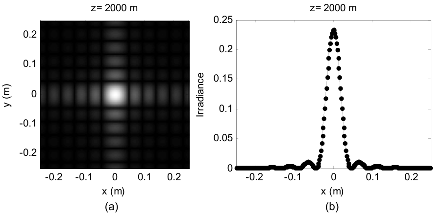
仿真结果可以对照解析夫琅禾费结果检查。先取源分布的傅里叶变换(表 1.3):
代入 \(f_{X1} = x_2/\lambda z\)、\(f_{Y1} = y_2/\lambda z\),再乘上各前导因子,得到夫琅禾费场:
辐照度 \(I_2(x_2,y_2) = U_2(x_2,y_2)U_2^*(x_2,y_2)\):
解析函数的点也画在图 5.7(b) 里。现在轮到你:把式 (5.22) 插进脚本,看能不能复现图 5.7(b)。
通常算夫琅禾费图样关心的是辐照度,前面的复指数都消失了——这种情况下唯一要操心的是常规源面采样条件 \(B_1 < 1/2\Delta x_1\)。但假如你需要带 chirp 项的夫琅禾费场:按式 (5.7) 的逻辑,观察面 chirp \(\exp\left[j\frac{k}{2z}(x_2^2+y_2^2)\right]\) 充分采样的条件是 \(\Delta x_2 \leq \lambda z/L_2\),用式 (5.18) 换算回源面就是
若式 (5.23) 不满足,接到变换前面的 chirp 相位会混叠。再结合菲涅耳数(夫琅禾费 regime 要求 \(N_F = w^2/\lambda z \ll 1\))与式 (5.23),可得
即网格样本数 M 要远大于"跨源孔径半径的样本数(\(w/\Delta x_1\))"的平方——意味着很大的 M。幸运的是,夫琅禾费相位通常不需要。
Python 实测(\(w=0.011\) m、\(z=2000\) m、\(L_2 = 0.5\) m、\(\Delta x_2 = 2\) mm,本例恰为临界采样):
- \(N_F = 0.121\)(书 0.12);
- \(I_2\) 峰值:解析 \((4w^2/\lambda z)^2 = 0.2343\),实测 0.2343(逐位一致);
- \(\mathrm{sinc}\) 第一零点 \(x = \lambda z/(2w) = 0.0455\) m,实测最近样本 0.0460 m;
- 第一旁瓣解析 \(0.045\times I_{2\max} = 0.0105\),实测 0.0117(网格粗采样下的旁瓣峰);
- 总功率源面 = 观察面 = \(4.84\times10^{-4}\)(FFT 定标 \(\mathrm{d}x_1^2\) 与 \(\mathrm{d}x_2^2\) 各自正确)。
5.5.1 三种传播算子总对比#
本章三个算子到齐,放在一张表里对照(选型决策流程见 5.4.5 节末的 mermaid 图):
| propTF(5.1) | propIR(5.2) | propFF(5.5) | |
|---|---|---|---|
| 出发式 | 式 (5.1)/(5.2),频域乘 \(H\) | 式 (5.3)/(5.4),空域 \(h\) 的 FFT 当 \(H\) | 式 (5.16)–(5.19),缩放 FT |
| 观察面边长 | \(L_2 = L_1\)(共网格) | \(L_2 = L_1\)(共网格) | \(L_2 = \lambda z/\Delta x_1\)、\(\Delta x_2 = \lambda z/L_1\)(独立网格) |
| 采样要求 | \(\Delta x \geq \lambda z/L\)(\(H\) chirp 过采样)\(+\ B_1 < 1/(2\Delta x)\) | \(\Delta x \leq \lambda z/L\)(\(h\) chirp 过采样);判 \(B_1 < L/(2\lambda z)\) | 辐照度:常规源面采样 \(B_1 < 1/(2\Delta x_1)\);要相位:\(\Delta x_1 \geq \lambda z/L_1\)(式 5.23) |
| 适用场景 | 短–中距离、最常用;观察面支撑 \(D_1+\lambda z/\Delta x\) 够放结果 | 长距离(\(\Delta x < \lambda z/L\));结果平滑,快而糙 | 远场 \(N_F = w^2/\lambda z \ll 1\);只要辐照度 |
| 精度表现 | 临界采样逐点等于解析;对拍 0.093 rad/0.8%(TF@2000) | 临界采样与 TF 全同;长距对拍 0.0011 rad/0.02%(IR@20000,主体区) | 峰值/零点/旁瓣位置准(临界时逐位);相位通常不保 |
| 典型 artifacts | 欠采样 → ticks、stair-step | 欠采样 → 周期副本(功率 ×4);过采样压谱 → 边缘假旁瓣 | \(L_2\) 网格 ≠ 源面网格,标轴易错;chirp 欠采样(式 5.24) |
| FFT 次数 | 2 | 3(\(h\) 一次不能省) | 1 |
| 记号坑 | 丢 \(e^{jkz}\) 整体相位 | 第 19 行 \(\mathrm{d}x^2\) 定标不能丢 | 返回 \(L_2\);nthroot 拉对比度看旁瓣 |
表:表 5-总结 三种传播算子对照(判据细节见表 5.1;精度数字来自 5.4.4 节对拍)
5.6 编码效率#
本章(以及全书)的函数和脚本在某些方面是为了易用和展示而牺牲效率的。比如 sqr_beam 用 meshgrid 定义采样坐标,传播函数里又重新定义一遍——函数好用,但冗余。
本书例子里速度和效率不是大问题,但如果要跑传播代码的多次迭代,就得注意了。MATLAB 提供两个调码工具:
- M-Lint:检查编辑器里代码的潜在问题。MATLAB Desktop 工具栏 Tools → Check Code with M-Lint,会列出发现的潜在问题。
- Profiler:跟踪代码里各语句与函数调用的执行时间,帮助定位问题、提升效率。Desktop 工具栏 Tools → Open Profiler,把要分析的文件填进 "Run this code:" 旁的菜单框,点 Start Profiling;运行结束后 Profile Summary 窗口给出执行时间分解。
Python 侧的对应物:python -m cProfile -s cumulative 脚本.py 看各函数耗时,timeit 做微基准;numpy 向量化本身就是最大的提效手段(避免逐元素 Python 循环)。
5.7 习题(原书)#
原书 9 道题。每题给题目与提示,本章做过数值的题附 Python 实测结果——先自己动手。
5.1 圆孔 + 临界采样:半径 \(w = 0.05\) m 的圆孔,平面波照明,\(\lambda = 0.5\ \mu\text{m}\),传播距离 1000 m,仿真阵列 500 × 500 样本,按菲涅耳传播的临界采样设计。(a) 求 \(L_1\)、\(\Delta x\) 与 Nyquist 频率 \(F_N\)。(b) 确定源有效带宽 \(B_1\)。\(B_1 < F_N\) 吗?跨圆函数直径有多少样本?© 求菲涅耳数。传播距离在菲涅耳区内吗?(d) 用 (a) 的 \(L_1\),对 z = 500、1000、2000 m 做菲涅耳传播,TF 与 IR 都试。
5.1 参考答案要点(Python 实测)
临界采样要求 \(\Delta x = L_1/M = \lambda z/L_1\),解出 \(L_1 = \sqrt{M\lambda z} = \sqrt{500\times0.5\times10^{-6}\times1000} = 0.5\) m,\(\Delta x = 1\) mm,\(F_N = 1/(2\Delta x) = 500\) cyc/m。\(B_1 = 5.98/w = 119.6 < 500\) ✓;跨直径 \(2w/\Delta x = 100\) 样本。\(N_F = w^2/\lambda z = 5\)(\(N_F = 1\) 对应 \(z = 5000\) m)——z = 1000 m 处 \(N_F > 1\),处于菲涅耳区(圆孔是平滑孔径,式 (4.28) 的 \(N_F \gtrsim 1\) 口径即可用)。离散圆盘功率 0.007841 vs 解析 \(\pi w^2 = 0.007854\)(100 样本跨直径的圆盘近似)。z = 500/1000/2000 m 对应 \(\lambda z/(L\Delta x) = 0.5/1/2\):TF 过采样、临界、欠采样——z = 1000 m 临界档实测 TF 与 IR 辐照度最大相对差 \(1.3\times10^{-15}\)(逐位相同),500 m 档 IR 出周期副本、2000 m 档 TF 出网格纹。
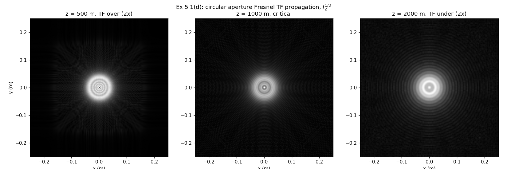
5.2 三个孔径的菲涅耳传播:回到习题 4.4 的三个孔径,用 500 × 500 阵列仿真菲涅耳传播:孔径 (a) \(L_1 = 2\) mm,z = 0.5、1、5 cm;孔径 (b) \(L_1 = 2.5\) cm,z = 0.5、2、5 m;孔径 © \(L_1 = 2.5\) cm,z = 0.5、2、5 m。哪些 z 给出临界采样?
5.2 提示
临界采样距离一律用式 (5.14):\(z = L_1^2/(M\lambda)\)。代入 \(M = 500\)、\(\lambda = 0.633\ \mu\text{m}\):(a) \(L_1 = 2\) mm → \(z_{crit} \approx 1.26\) cm(三档 0.5/⅕ cm 都不是,最接近 1 cm);(b)© \(L_1 = 2.5\) cm → \(z_{crit} \approx 1.97\) m(题给三档 0.5/⅖ m:0.5 m 在临界之下、2 m 恰近临界、5 m 超过临界 → TF 欠采样/IR 过采样 regime)。注意 \(\lambda\) 取值:习题 4.4 用 0.633 μm;若沿用本章例子的 0.5 μm 需重算。
5.3 功率守恒诊断:传播仿真的一个有用诊断是计算源面与观察面的功率。假设没有吸收或散射(本书仿真都成立),功率(正比于瓦特)应当守恒——源面与观察面应含相同光功率,否则可能有代码错误或采样问题。功率是积分辐照度:
对本章 sqr_beam 例子:(a) 加代码用 sum 计算源面与观察面功率(各传播案例)。要不要套两层 sum?dx 与 dy 怎么办?可以把功率计算行末的分号去掉,让数值在执行时显示到命令窗口。(b) 某些案例的源/观察面功率有出入吗?
5.3 参考答案要点(Python 实测)
两层 sum(sum(I))*dx^2(dx = dy)。实测(源面功率 0.010404):
| z (m) | \(P_{TF}/P_1\) | \(P_{IR}/P_1\) |
|---|---|---|
| 1000 | 1.00000 | 4.00000 |
| 2000 | 1.00000 | 1.00000 |
| 4000 | 1.00000 | 0.99101 |
| 20,000 | 1.00000 | 0.94992 |
TF 各距离功率守恒(幅度 \(|H|=1\),只有混叠级别的误差);IR@1000 的周期副本把图案复制 \(2\times2\) 份进观察窗,功率恰好 ×4;IR@20,000 的窗口滤波压掉约 5% 功率。所以答案是:有出入,出入全部来自 IR 的非临界采样案例,而且大小正好能被采样判据解释——这正是书把这题放在本章的用意。
5.4 Rayleigh–Sommerfeld 衍射:菲涅耳衍射带傍轴(小光线角)假设,限制最小传播距离;Rayleigh–Sommerfeld 衍射则在所有距离上基本精确。(a) 基于菲涅耳传播例程,写出 RS 衍射的传递函数与脉冲响应传播器。(b) 用 sqr_beam 例子在 z = 1000、2000、4000、20,000 m 检验。菲涅耳与 RS 结果有差别吗?© 计算 sqr_beam 例子的菲涅耳数。关于菲涅耳 vs RS 的取舍能说什么?
5.4 提示
RS 传递函数把式 (4.19) 直接搬进 propTF 的框架:\(H_{RS}(f_X,f_Y) = \exp\{jkz\sqrt{1-(\lambda f_X)^2-(\lambda f_Y)^2}\}\)(传播波区);RS 脉冲响应用式 (4.15):\(h = \frac{z}{j\lambda}\frac{e^{jkr}}{r^2}\),\(r = \sqrt{z^2+x^2+y^2}\),照 propIR 的骨架实现(注意 h 在阵列边缘处 \(r\) 大、振幅小,采样压力比菲涅耳 chirp 小)。sqr_beam 的 \(N_F\) = 1.3(1000 m)、2.6(2000 m)、5.2(4000 m)、26(20,000 m)——衍射角 ~ λ/w ~ 10 μrad,全程极傍轴,菲涅耳与 RS 的差别应在数值噪声级;真正会拉开差距的是大 NA 孔径或极近距传播。
5.5 高斯光束:傅里叶方法非常适合仿真激光光束传播。激光束通常满足傍轴光线角近似(菲涅耳表达式适用);而且高斯函数比同支撑的方孔/圆孔光束在采样 artifacts 方面宽容得多。激光教科书定义沿 z 传播的高斯激光束(TEM\(_{0,0}\) 模)辐照度:
其中 \(w_0\) 是源光束 \(e^{-2}\) 半径(z = 0),\(w(z)\) 是距离 z 处的光束半径:
其中
为瑞利距离(Rayleigh range)。以下问题取源光场(z = 0):
\(w_0 = 1\) mm、\(\lambda = 0.633\ \mu\text{m}\)、\(A_0 = 1\) V/m。(严格说 \(I_0 = |A_0|^2/(2\eta)\) W/m²,\(\eta = 377\ \Omega\) 为自由空间阻抗。)(a) 取边长 15 mm、250 × 250 阵列,在源阵列里生成式 (5.29) 的高斯束,对 z = 1、5、10 m 做菲涅耳传播,与式 (5.26) 的解析结果比较辐照度。(b) 临界采样的传播距离是多少?对 10 m 传播检验源带宽判据。© 推导 \(U_0\) 束的夫琅禾费辐照度表达式,证明与式 (5.26) 一致。
5.5 参考答案要点(Python 实测)
\(z_R = \pi w_0^2/\lambda = 4.963\) m;临界采样距离(式 5.14)\(z = L^2/(M\lambda) = 0.015^2/(250\times0.633\times10^{-6}) = 1.42\) m。(a) 数值 vs 解析剖面最大相对偏差:z = 1 m → \(6.9\times10^{-16}\)、z = 5 m → \(3.4\times10^{-16}\)、z = 10 m → \(6.6\times10^{-10}\)——高斯 + TF 传播达到机器精度/近机器精度,印证"高斯对采样宽容"(高斯谱指数衰减,天然近带宽限)。\(w(z)\) 解析:1.020/1.419/2.249 mm。(b) z = 10 m 可用带宽 \(L/(2\lambda z) = 1185\) cyc/m;高斯谱 \(\exp(-\pi^2 w_0^2 f^2)\) 的 99% 功率带宽 \(\approx \mathrm{erfinv}(0.99)/(\sqrt{2}\pi w_0) = 410\) cyc/m < 1185 ✓。© \(\mathfrak{F}\{U_0\} = \pi w_0^2 A_0\exp[-\pi^2 w_0^2(f_X^2+f_Y^2)]\),代入 \(f = r_2/(\lambda z)\):\(I_2 = \left(\frac{\pi w_0^2}{\lambda z}\right)^2\exp\left[-\frac{2\pi^2 w_0^2 r_2^2}{(\lambda z)^2}\right]\)。与式 (5.26) 对比:令 \(w(z) = \lambda z/(\pi w_0)\)(即 \(z \gg z_R\) 时式 (5.27) 的渐近),两式完全一致——远场高斯束半径 \(w(z) \to \lambda z/(\pi w_0)\),发散角 \(\theta = \lambda/(\pi w_0)\)。
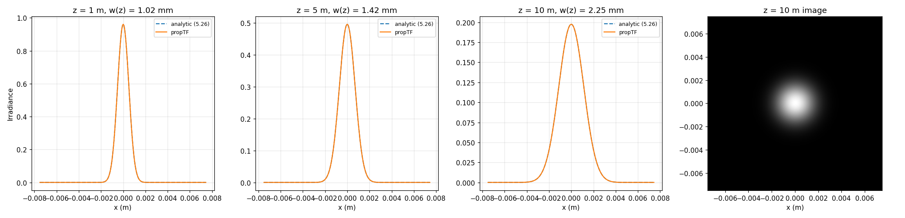
5.6 检验式 (5.15) 的概念:用 TF 传播器对 sqr_beam 例子仿真总距离 z = 20,000 m,但做成 split-step:传播器连续调用 10 次,每步 \(\Delta z = 2000\) m(临界采样)。与单次 TF 传播 20,000 m 比较。结果相同吗?
5.6 参考答案要点(Python 实测)
相同:单次 vs 拆步的辐照度最大差 \(2.0\times10^{-14}\)(浮点误差级)。这正是式 (5.15):\(H(z_1)\cdots H(z_N) = H(\sum z_i)\),每步临界采样救不了总距离欠采样(TF@20,000 的 stair-step 在拆步后原样出现)。
5.7 三个孔径的夫琅禾费传播:回到习题 4.4 的三个孔径,用 500 × 500 阵列仿真夫琅禾费传播:孔径 (a) \(L_1 = 2\) mm,z = 5 m;孔径 (b) \(L_1 = 2.5\) cm,z = 50 m;孔径 © \(L_1 = 2.5\) cm,z = 50 m。在 x 轴辐照度剖面上比较离散与解析结果。(注意:本题不要求夫琅禾费场的相位被充分采样。)
5.7 提示
解析式就是习题 4.4 的三个夫琅禾费辐照度(sinc²×sinc²、环形 jinc 差、双孔条纹×Airy 包络),现在用 propFF 算离散版:它自动给出 \(L_2 = \lambda z/\Delta x_1\) 的观察面网格。核对三件事:峰值(面积定标)、第一零点位置、条纹周期;解析点每隔 10 个样本画一次,与图 5.7(b) 同款。propFF 只保证辐照度可信,前导 chirp 相位可能欠采样(式 5.23/5.24)。
5.8 方孔的 98% 谱功率判据:平面波照明的方孔,假设方函数采样后至少 98% 的谱功率可用[见式 (2.11)]。找出仿真阵列所需线性样本数 M 的判据,使夫琅禾费场相位被充分采样。结果应不含变量——只是一个数。
5.8 提示
串三根线:98% 谱功率 → 源有效带宽 \(B_1 \approx 5.98/w\)(式 5.10);夫琅禾费相位充分采样 → 式 (5.23) \(\Delta x_1 \geq \lambda z/L_1\);夫琅禾费 regime → \(N_F = w^2/(\lambda z) \ll 1\),即 \(\lambda z \gg w^2\)。判据 \(B_1 < 1/(2\Delta x_1)\) 给 \(\Delta x_1 < 1/(2B_1) = w/11.96\),故跨孔径半径样本数 \(w/\Delta x_1 > 11.96\);代入式 (5.24) \(M \gg (w/\Delta x_1)^2\) 得 \(M \gg 143\)——取整到 \(M \gtrsim 200\)(2 的幂网格取 256)。这就是"只含一个数"的答案:约 200(或 256)。注意答案随 98% 带宽的精确定义浮动,重点是把三根线串起来的逻辑。
5.9 两步传播器:把附录 B 描述的两步传播器函数写出来。用 sqr_beam 例子测试:(a) \(L_1 = 0.5\) m,z = 2000 m(临界采样距离):检查 \(L_2 = 0.2, 0.4, 0.5, 0.6, 1\) m 的场幅度剖面。0.5 m 的情形应与 TF 传播结果相同;其他距离有什么明显 artifacts?(b) \(L_1 = 0.5\) m,z = 20,000 m:调整 \(L_2\) 能减少观察面结果的 artifacts 吗?
5.9 提示
两步法(附录 B):先用球面波因子把场"折算"到中间面(距离 \(z_a\),边长按几何缩放),再做标准 TF 传播 \(z_b = z - z_a\),两段各自满足各自的采样判据;中间面边长与 \(\lambda z_a/\Delta x_1\) 同构(式 5.18)。检验点:临界情形 \(L_2 = 0.5\) m 时两步退化为一步(propTF 的 \(H(z)\) 分解精确);\(L_2\) 偏离时注意中间面 chirp 采样与观察面支撑的权衡——这正是附录 B 分析的内容。
坑与陷阱#
TF 与 IR 的采样判据方向相反:记反全盘错
\(\Delta x \geq \lambda z/L\) 让 TF 的 H chirp 过采样(此时 IR 的 h 欠采样、出周期副本);\(\Delta x \leq \lambda z/L\) 让 IR 的 h 过采样(此时 TF 的 H 欠采样、出 ticks/stair-step)。两个不等号来自两个不同的网格:判 H 看频率网格(间距 1/L)上的相位增量,判 h 看空间网格(间距 Δx)上的瞬时频率。想不起方向时用 h 的瞬时频率 \(r/(\lambda z)\) 推一遍,30 秒的事。
split-step 不改变采样 regime(式 5.15)
把长距离拆成多段 TF,等价于把传递函数连乘:\(H(z_1)\cdots H(z_N) = H(z_1+\cdots+z_N)\)——数值验证最大差 \(2\times10^{-14}\)。每段都临界采样也没用,总距离才决定判据。split-step 的正当用途是中途插入相位屏/元件(大气湍流仿真),不是绕过采样限制。
propIR 的 dx² 定标不能丢
propIR 第 19 行 H=fft2(fftshift(h))*dx^2:u1 的 FFT 与 U2 的 IFFT 定标互相抵消,唯独 FFT{h} 需要 \(\mathrm{d}x^2\) 回到连续量纲。丢了它,IR 结果幅度差 \((M\,\mathrm{d}x)^2/L^2\) 量级——直接表现为功率比严重偏离 1(习题 5.3 的诊断正好抓这个)。
fftshift/ifftshift 的配对与奇数阵列
本章代码的固定舞步:居中排列 \(\leftrightarrow\) FFT 排列之间靠 fftshift 进、ifftshift 回。偶数 M 时 MATLAB 与 numpy 的 fftshift == ifftshift,书全用偶数所以安全;奇数阵列两者不同,混用会把场平移一个样本。另外记住 FFT 数组的"零坐标样本":MATLAB 在 (M/2+1, M/2+1),numpy 在 (M//2, M//2)——剖面对照时先对齐这一点。
unwrap 的整体常数任意,欠采样区会漂移
比较两条相位曲线(数值 vs 解析)前,先各自减去中心样本的值对齐——unwrap 的 \(2\pi N\) 分支是任意的,不同实现对齐前可以差任意多圈常数,不对齐会读成"形状不同"(本次实测:解析式按式 (5.11) 丢掉 \(e^{jkz}\)、中心对齐后,两条曲线的中心常数差 < 0.05 rad;若解析式保留 \(e^{jkz}\),\(jkz \approx 2.5\times10^{10}\) rad 的浮点大数取模误差会直接污染常数项)。同理,相位振荡快过网格的区域(剖面两翼)unwrap 会累积分支错误,画出来的"漂移"不是物理误差;定量比较限定在主体区。
propFF 的观察面网格 ≠ 源面网格
propFF 返回的 \(L_2 = \lambda z/\Delta x_1\)、\(\Delta x_2 = \lambda z/L_1\),与源面的 \(L_1\)、\(\Delta x_1\) 一般不同。画图必须用观察面自己的坐标(书改动清单里专门重算 dx2、x2),顺手拿源面坐标标轴会把图样横向缩放错。只有临界采样时两者才恰好相等。
有效带宽 B1 是估计,书值偏保守
\(B_1 = 5.98/w\)(式 5.10)按 ch2 的径向 98% 谱功率方法数值复核(解析总功率归一化):精确 98% 半径对应 \(B \approx 5.14/w\),2.2 节的圆整值 5/w 占 97.98%,5.98/w 占 98.31%——书取保守值(多收约 0.3% 谱功率),做判据时安全方向;但别把它当精确常数。另外这个积分的分母必须用解析总功率 \((2w)^2\),用网格总和归一化会把 98% 交点带偏百分之几十(见 5.4.3 拓展)。\(B_1\) 的选取本来就是书 5.4.5 节承认的"艺术"。
scipy 的 fresnel 返回 (S, C),S 在前
Python 对拍式 (5.11) 时最容易踩:scipy.special.fresnel(x) 返回 (S(x), C(x))——S 在前,与函数名直觉相反。MATLAB 侧 Symbolic Toolbox 的 mfun('FresnelC',x)/mfun('FresnelS',x) 各返回一个。搞反了会把式 (5.11) 的实部虚部对调,幅度对称看不出来,相位对拍当场露馅。另外基础 MATLAB 没有 Fresnel 积分,也没有通用 rect(信号处理工具箱才有);Python 的 np.sinc 与书表 1.2 的 sinc 同定义。
速览#
- 三个传播器:propTF(式 5.⅕.2,频域乘 \(H\))、propIR(式 5.⅗.4,FFT{h}×dx² 当 H)、propFF(式 5.16–5.19,缩放 FT,返回 \(L_2 = \lambda z/\Delta x_1\))。
- propTF/propIR 的固定舞步:fftshift 进 → FFT → 乘 H → IFFT → ifftshift 回;\(e^{jkz}\) 整体相位直接丢。
- sqr_beam 基准:\(L=0.5\) m、M=250、Δx=2 mm、w=0.051 m(51 样本跨孔径)、z=2000 m、\(N_F=2.6\);观察面峰值 1.96 > 1(相长干涉),波前 = 压平的碗形。
- 采样判据:\(D_1 < L\)(留 2–3 倍 guard);\(\Delta x \geq \lambda z/L\) → TF 好/IR 副本;\(\Delta x \leq \lambda z/L\) → IR 好/TF 混叠;\(\Delta x = \lambda z/L\) 临界,TF≡IR 且采样 H、h 精确等于解析值。
- 判据的物理:\(H\) 的 chirp 活在频率网格(判相位增量),\(h\) 的 chirp 活在空间网格(判瞬时频率 \(r/\lambda z\))——不等号方向相反。
- sqr_beam 四距离对照表 5.2:z=1000(TF 过 2×,观察面限 \(D_1+\lambda z/\Delta x=0.352\) m)、2000(临界)、4000(H 欠 2×,带宽 125)、20000(欠 10×,带宽 25)。
- 精度对拍(式 5.11,Fresnel 积分):TF@2000 主体区 0.093 rad/0.8%;TF@1000 0.43 rad/2.7%(两翼磨平);IR@20000 0.0011 rad/0.02%(边缘假旁瓣)。
- 设计流程(表 5.3):源支撑 → 定 regime → 查带宽判据(\(B_1 = 5.98/w\))→ 有 artifacts 回头调参;临界距离 \(z = L^2/(M\lambda)\)(式 5.14)。
- split-step 无用论(式 5.15):\(H(z_1)\cdots = H(\sum z)\),数值差 \(2\times10^{-14}\);功率守恒诊断(习题 5.3):TF 全程 1.00000,IR@1000 = 4.00000(周期副本 ×4),IR@20000 = 0.95(窗口滤波)。
- 夫琅禾费(5.5):\(L_2 = \lambda z/\Delta x_1\);方孔解析 \(I_2 = (4w^2/\lambda z)^2\mathrm{sinc}^2(2wx_2/\lambda z)\mathrm{sinc}^2(2wy_2/\lambda z)\)(式 5.22),峰值 0.2343 逐位对上;要相位充分采样需 \(M \gg (w/\Delta x_1)^2\)(式 5.24)。
术语速查#
| 英文 | 中文 | 一句话 |
|---|---|---|
| propagator | 传播器 | 把源面场变到观察面场的函数(propTF/propIR/propFF) |
| transfer function (TF) approach | 传递函数法 | 频域:FFT{u1} × H,式 5.⅕.2 |
| impulse response (IR) approach | 脉冲响应法 | 空域卷积的 FFT 实现,FFT{h}×dx² 当 H,式 5.⅗.4 |
| Fraunhofer propagation | 夫琅禾费传播 | 缩放 FT;观察面边长 \(L_2=\lambda z/\Delta x_1\) 由源面决定 |
| critical sampling | 临界采样 | \(\Delta x=\lambda z/L\);TF≡IR,采样 H/h 恰等于解析值 |
| oversampled / undersampled chirp | 过/欠采样 chirp | 相位网格跟得上/跟不上;欠采样 → 混叠 artifacts |
| guard area | 警戒区 | 源支撑外留白(\(L=2\sim3D_1\)),防 FFT 周期回绕 |
| source effective bandwidth \(B_1\) | 源有效带宽 | \(5.98/w\)(98% 径向谱功率,式 5.10);估计量 |
| aliasing | 混叠 | 超过 Nyquist 的谱折返;本章 artifacts 的总根源 |
| periodic copies | 周期副本 | IR 欠采样时观察面出现的复制图案(间距 \(\lambda z/\Delta x\)) |
| stair-step / ticks | 台阶 / 尖刺 | TF 欠采样的两类剖面 artifact |
| spurious sidelobes | 假旁瓣 | IR 长距离时阵列边缘的伪旁瓣 |
| windowing | 加窗 | 压源谱或削两翼能量,配合多步传播(Schmidt) |
| split-step | 分步传播 | 多段 TF 连乘 = 单次(式 5.15);用途是插相位屏 |
| two-step method | 两步法 | 中间面折算,源/观察面边长可不同(附录 B) |
| Fresnel integrals C, S | 菲涅耳积分 | 式 5.12;方孔解析解(式 5.11)的积木 |
| wavefront | 波前 | 等相位面;unwrap 相位剖面即其形状 |
| M-Lint / Profiler | MATLAB 静态检查 / 剖析器 | 找代码隐患 / 找耗时热点(5.6 节) |
| power conservation | 功率守恒 | \(P=\iint I\,dxdy\) 源=观察(习题 5.3);采样体检表 |